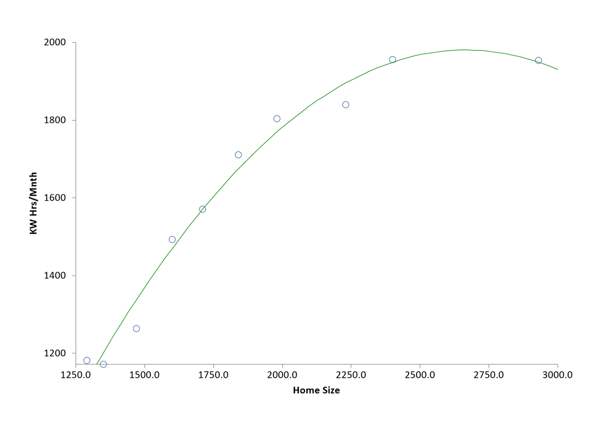
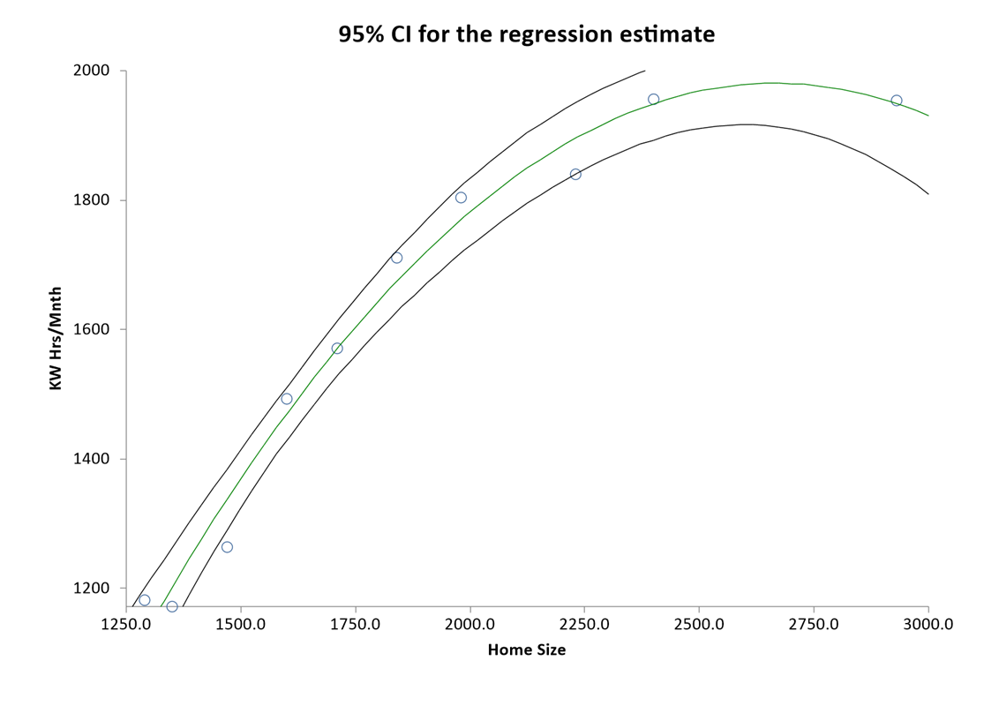
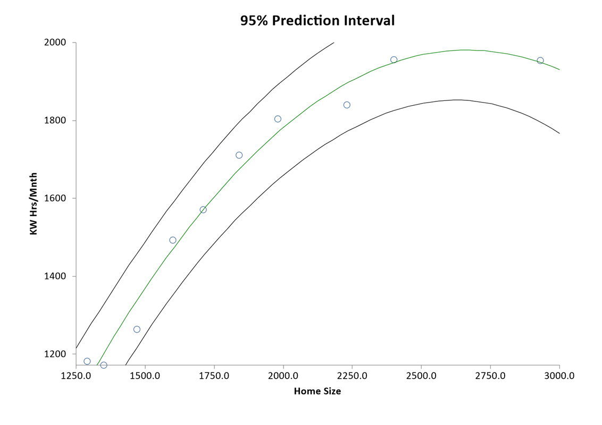

Polynomial Regression
Menu location: Analysis_Regression and Correlation_Polynomial.
This function fits a polynomial regression model to powers of a single predictor by the method of linear least squares. Interpolation and calculation of areas under the curve are also given.
If a polynomial model is appropriate for your study then you may use this function to fit a k order/degree polynomial to your data:
$\displaystyle \hat Y=b_0+b_1x_1 + b_2x_2^2+...+b_kx_k^k$
- where Y caret is the predicted outcome value for the polynomial model with regression coefficients b1 to k for each degree and Y intercept b0. The model is simply a general linear regression model with k predictors raised to the power of i where i=1 to k. A second order (k=2) polynomial forms a quadratic expression (parabolic curve), a third order (k=3) polynomial forms a cubic expression and a fourth order (k=4) polynomial forms a quartic expression. See Kleinbaum et al. (1998) and Armitage and Berry (1994) for more information.
Some general principles:
- the fitted model is more reliable when it is built on large numbers of observations.
- do not extrapolate beyond the limits of observed values.
- choose values for the predictor (x) that are not too large as they will cause overflow with higher degree polynomials; scale x down if necessary.
- do not draw false confidence from low P values, use these to support your model only if the plot looks reasonable.
More complex expressions involving polynomials of more than one predictor can be achieved by using the general linear regression function. For more detail from the regression, such as analysis of residuals, use the general linear regression function. To achieve a polynomial fit using general linear regression you must first create new workbook columns that contain the predictor (x) variable raised to powers up to the order of polynomial that you want. For example, a second order fit requires input data of Y, x and x².
Model fit and intervals
Subjective goodness of fit may be assessed by plotting the data and the fitted curve. An analysis of variance is given via the analysis option; this reflects the overall fit of the model. Try to use as few degrees as possible for a model that achieves significance at each degree.
The plot function supplies a basic plot of the fitted curve and a plot with confidence bands and prediction bands. You can save the fitted Y values with their standard errors, confidence intervals and prediction intervals to a workbook.
Area under curve
The option to calculate the area under the fitted curve employs two different methods. The first method integrates the fitted polynomial function from the lowest to the highest observed predictor (x) value using Romberg's integration. The second method uses the trapezoidal rule directly on the data to provide a crude estimate.
Technical Validation
StatsDirect uses QR decomposition by Givens rotations to solve the linear equations to a high level of accuracy (Gentleman, 1974; Golub and Van Loan, 1983). If the QR method fails (rare) then StatsDirect will solve the system by singular value decomposition (Chan, 1982).
Example
From McClave and Dietrich (1991, p. 753).
Test workbook (Regression worksheet: Home Size, KW Hrs/Mnth).
Here we use an example from the physical sciences to emphasise the point that polynomial regression is mostly applicable to studies where environments are highly controlled and observations are made to a specified level of tolerance. The data below are the electricity consumptions in kilowatt-hours per month from ten houses and the areas in square feet of those houses:
| Home Size | KW Hrs/Mnth |
| 1290 | 1182 |
| 1350 | 1172 |
| 1470 | 1264 |
| 1600 | 1493 |
| 1710 | 1571 |
| 1840 | 1711 |
| 1980 | 1804 |
| 2230 | 1840 |
| 2400 | 1956 |
| 2930 | 1954 |
To analyse these data in StatsDirect you must first prepare them in two workbook columns appropriately labelled. Alternatively, open the test workbook using the file open function of the file menu. Then select Polynomial from the Regression and Correlation section of the analysis menu. Select the column marked "KW hrs/mnth" when asked for the outcome (Y) variable and select the column marked "Home size" when asked for the predictor (x) variable. Enter the order of this polynomial as 2.
For this example:
Polynomial regression
| Intercept | b0= -1216.143887 | t = -5.008698 | P = 0.0016 |
| Home Size | b1= 2.39893 | t = 9.75827 | P < .0001 |
| Home Size^2 | b2= -0.00045 | t = -7.617907 | P = 0.0001 |
KW Hrs/Mnth = -1216.143887 +2.39893 Home Size -0.00045 Home Size^2
Analysis of variance from regression
| Source of variation | Sum Squares | DF | Mean Square |
| Regression | 831069.546371 | 2 | 415534.773185 |
| Residual | 15332.553629 | 7 | 2190.364804 |
| Total (corrected) | 846402.1 | 9 |
Root MSE = 46.801333
F = 189.710304 P < .0001
|
Multiple correlation coefficient |
(R) = 0.990901 |
|
|
R² = 98.188502% |
|
|
Ra² = 97.670932% |
Durbin-Watson test statistic = 2.078928
Polynomial regression - area under curve
AUC (polynomial function) = 2855413.374801
AUC (by trapezoidal rule) = 2838195
Thus, the overall regression and both degree coefficients are highly significant.
Plots



N.B. Look at a plot of this data curve. The right hand end shows a very sharp decline. If you were to extrapolate beyond the data, you have observed then you might conclude that very large houses have very low electricity consumption. This is obviously wrong. Polynomials are frequently illogical for some parts of a fitted curve. You must blend common sense, art and mathematics when fitting these models! Remember the general principles listed above.
 R code
R code
This R code reproduces the example above. It needs no packages and was checked with R 4.6.1. Paste it into R, or save it as a script and run it.
# Polynomial regression: the StatsDirect help example (McClave and Dietrich 1991,
# electricity consumption and home size, degree 2) in R
size <- c(1290, 1350, 1470, 1600, 1710, 1840, 1980, 2230, 2400, 2930)
kwh <- c(1182, 1172, 1264, 1493, 1571, 1711, 1804, 1840, 1956, 1954)
# R's standard regression on the size and its square (poly with raw = TRUE keeps
# the ordinary powers, so the coefficients are the report's b0, b1 and b2)
fit <- lm(kwh ~ poly(size, 2, raw = TRUE))
print(summary(fit))
# The report's lines to 6 places, as for multiple linear regression
six <- function(x) formatC(x, digits = 6, format = "f", drop0trailing = TRUE)
pv <- function(p) {
if (p < 0.0001) "P < 0.0001" else
paste("P =", formatC(p, digits = 4, format = "f", drop0trailing = TRUE))
}
s <- summary(fit)$coefficients
df <- fit$df.residual
lab <- c("Intercept", "Home Size", "Home Size^2")
for (i in 1:3) {
cat(lab[i], " b", i - 1, "= ", six(s[i, 1]),
if (i > 1) paste(" r =", six(s[i, 3] / sqrt(s[i, 3]^2 + df))) else "",
" t = ", six(s[i, 3]), " ", pv(s[i, 4]), "\n", sep = "")
}
cat("KW Hrs/Mnth =", six(s[1, 1]), paste0("+", six(s[2, 1])), "Home Size", six(s[3, 1]),
"Home Size^2\n")
a <- anova(fit)
ssreg <- a$"Sum Sq"[1]
ssres <- a$"Sum Sq"[2]
cat("Regression", six(ssreg), 2, six(ssreg / 2), "\n")
cat("Residual", six(ssres), df, six(ssres / df), "\n")
cat("Total (corrected)", six(ssreg + ssres), df + 2, "\n")
cat("Root MSE =", six(sqrt(ssres / df)), "\n")
f <- summary(fit)$fstatistic
cat("F =", six(f[1]), " ", pv(pf(f[1], f[2], f[3], lower.tail = FALSE)), "\n")
cat("Multiple correlation coefficient (R) =", six(sqrt(summary(fit)$r.squared)), "\n")
cat("R2 =", paste0(six(100 * summary(fit)$r.squared), "%"), "\n")
cat("Ra2 =", paste0(six(100 * summary(fit)$adj.r.squared), "%"), "\n")
e <- residuals(fit)
cat("Durbin-Watson test statistic =", six(sum(diff(e)^2) / sum(e^2)), "\n")
# Area under the fitted curve between the smallest and largest home size, by
# integrating the polynomial, and the area under the data by the trapezoidal rule
b <- coef(fit)
curve_area <- integrate(function(x) b[1] + b[2] * x + b[3] * x^2, min(size), max(size))
cat("AUC (polynomial function) =", six(curve_area$value), "\n")
trapezia <- sum(diff(size) * (head(kwh, -1) + tail(kwh, -1)) / 2)
cat("AUC (by trapezoidal rule) =", six(trapezia), "\n")